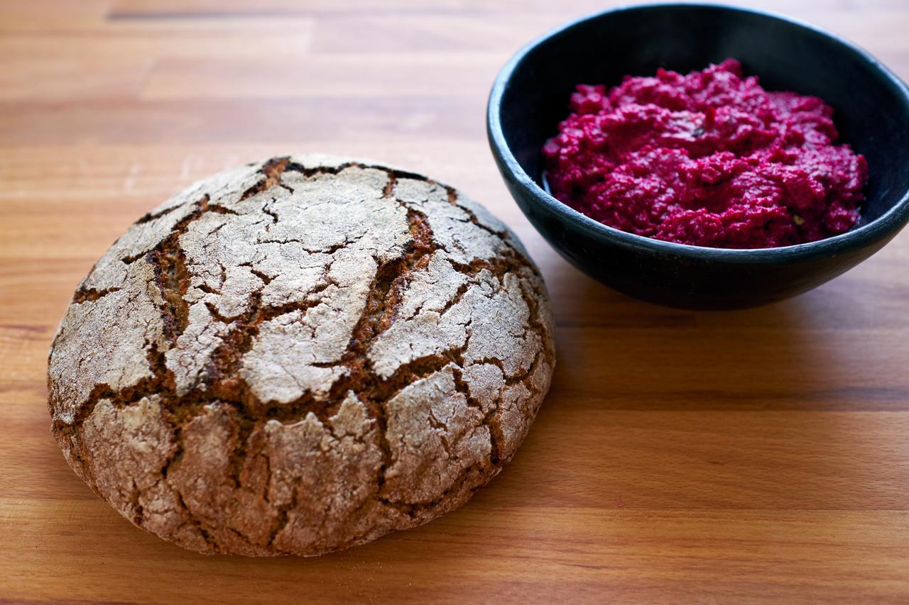
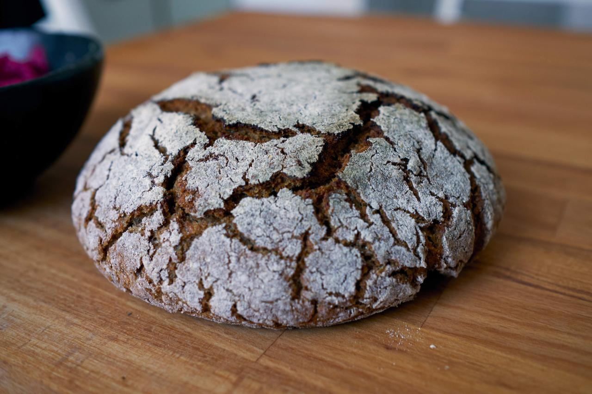

Gesunde Rezepte für Sauerteigbrot und Weiteres
Roggenvollkornbrot ist eines unser Lieblingsbrote. Es schmeckt sehr intensiv nach Roggen und passt sehr gut zu herzhaften Aufstrichen wie Hummus (im Bild ist Hummus mit roter Bete zu sehen). Roggenteige erfordern minimales Kneten und haben relativ kurze Gehzeiten, daher ist dieses Brot schnell gebacken. Nur an der Klebrigkeit des Teiges sollte man nicht verzweifeln. Die Risse auf dem Brot entstehen ganz von alleine und kommen besonders gut zur Geltung, da der Teigling bemehlt wird, bevor er in den Gärkorb kommt.

Abends die Zutaten für den Sauerteig vermischen und 8-12 Stunden bei Raumtemperatur gehen lassen. Der Teig sollte sichtbar aufgegangen sein. Für das Brühstück das Schrot und Salz in eine hitzeresistente Schüssel geben und mit dem kochendem Wasser übergießen. Das Wasser am besten vor dem Kochen abmessen, dann kann das Wasser aus dem Wasserkocher einfach auf das Schrot gekippt werden. Gut mit einem Löffel vermischen, bis keine Klümpchen mehr zu sehen sind und direkt an der Oberfläche mit Frischhaltefolie abdecken, das verhindert das Austrocknen des Brühstücks. Direkt nach dem Aufgießen ist das Brühstück noch relativ flüssig, mit Abkühlen saugt das Schrot aber das ganze Wasser auf. Die Endkonsistenz sollte ein fester, aber nicht trockener Brei sein. Bei Raumtemperatur darf das Brühstück nun mindestens 8 Stunden quellen.
Am nächsten Morgen das Brühstück mit dem restlichen Wasser vermischen und dann Mehl und Sauerteig dazugeben. Mit der Hand fleißig kneten bzw. vermischen bis sich ein Teig bildet, der zusammenhängend, aber nicht allzu fest ist. Bei Bedarf kann auch noch mehr Wasser hinzugefügt werden. Da Roggen fast kein Gluten enthält, muss der Teig nur gemischt und nicht geknetet werden. Es eignet sich daher auch gut die Küchenmaschine mit dem Flachrührer (K-Haken) oder ein sehr stabiler Rührlöffel zum Mischen. Die Hände bekommt man gut mit einer flexiblen und angefeuchteten Teigkarte sauber.
Nun den Teig abgedeckt bei Raumtemperatur etwa eine Stunden aufgehen lassen. Nach der Gehzeit den Teig auf die reichlich bemehlte Arbeitsfläche geben. Den Teig ebenfalls bemehlen und mit den Händen zu einer Kugel formen. Den Teigling in einen bemehlten Gärkorb setzen und nochmal eine Stunde gehen lassen. Währenddessen im Backofen einen Gusseisentopf auf 250 Grad mindestens 45 Minuten aufheizen. Alternativ ein Pizzastahl oder Pizzastein aufheizen, notfalls geht auch ein Backblech. Vorheizen ist aber auch hier wichtig.
Nach der Gehzeit sollte der Teigling gut aufgegangen sein und einige Risse auf der Oberfläche zu sehen sein. Vorsichtig auf das Backblech, den Stein/Stahl oder in den Gusseisentopf stürzen (eventuell mit Hilfe eines Backpapiers) und bei 250 Grad für 20 Minuten backen. Wenn kein Gusseisentopf mit Deckel verwendet wird, eine halbe Tasse Wasser auf den Boden des Backofens (oder in die aufgeheizten Nägel) kippen und die Türe schnell schließen.
Nach 20 Minuten den Deckel entfernen oder kurz die Tür öffnen und das Brot bei 220 Grad für 30 Minuten fertig backen, bis es die gewünschte Bräunung hat. Das Brot sollte mit einigen Rissen überzogen sein, die besonders schön zur Geltung kommen, da der Teigling ja für den Gärkorb bemehlt wurde.

Reine Roggenbrote schmecken am besten, wenn man sie erst 24 Stunden nach dem Backen anschneidet. Aber mindestens sollte das Brot komplett abgekühlt sein, bevor man es anschneidet, denn sonst trocknet es schnell aus.
Wir verdoppeln dieses Rezept meistens und backen zwei Brote nacheinander. Der zweite Gärkorb kommt nach einer Stunde gehen in den Kühlschrank, während das erste Brot backt, um Übergare zu verhindern. Auf einem großen Backblech oder Stahl/Stein können auch zwei Brote gleichzeitig gebacken werden.